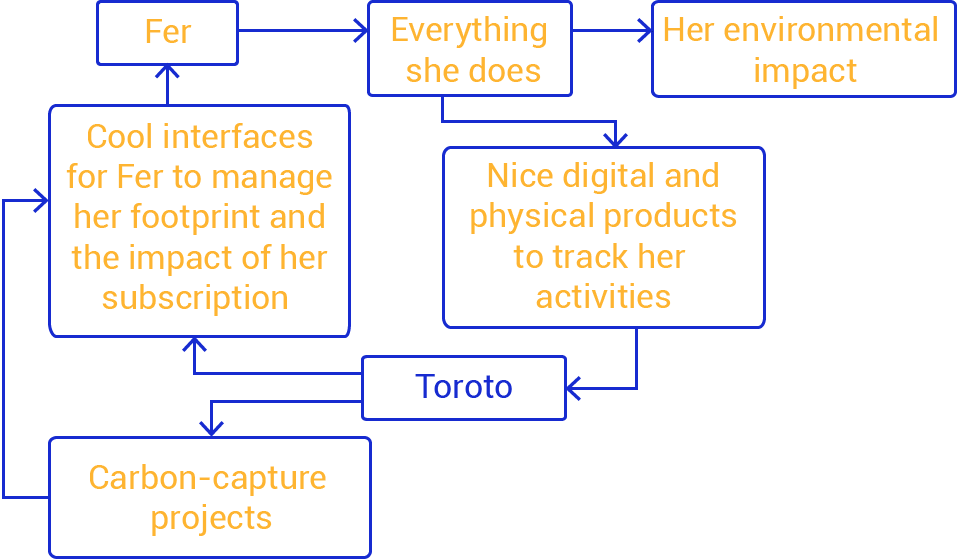

* * *
A brief ideation excercise for an awesome company
In search of carbon footprint traceability
Products that smoothly integrate with the user's lifestyle are going to be needed
Meet Fer
And we need an user to enjoy our products

Get to know her
- Investor relations at an important VC fund
- 28 years old
- Loves dogs
- Cooks occasionally
- Walks most of the time
- Uses car occasionally
- Uses smartphone profficiently
- Extroverted and talkative
- Cares about people
- When using gadgets, she avoids technicalities
- Does her own laundry
Reasons to use our products
- - She needs to travel regularly by plane and is aware of the impact it has to the environment
- - She can't measure her impact to the environment accuratelly
- - She does not know how to reduce her impact but she cares
Reasons to pay for our products
- - It is affordable and gives her a sense of participation
- - She can't sacrifice her whole lifestyle but small actions are a good beginning
- - She is aware of the potentially huge impact she has on the environment
Pains and objectives
- - She wants to know how she is impacting the environment, and
- - Reduce that impact
- - She hopes to control her actions based on precise knowledge
Hands on with the tech stuff
Just don't forget we are designing for Fer (because she won't)
A SIMPLE DIAGRAM
WHICH MEANS
A word on tracking carbon footprints
It is difficult. The issues with tracking our carbon footprints are multidimensional; almost every activity we perform generates CO2 emissions directly or indirectly. To help people track their emissions, a deep analysis of what they do and how they do it must take place on a daily basis. Creating products that seamlessly merge with people's everyday activities encompasses a mix of both, technological solutions that are up to the mark for such a task of specialized data gathering and state of the art experiences designed with the sole purpose of integrating these, otherwise invasive, technologies.
Three main verticals are being explored for this excercise:


Mobility

The ride
Remember, Fer walks, but ocasionally she commutes to more distant places and her good ol' 2015 Peugeot 208 takes her anywhere.
In order to calculate the carbon footprint related to driving a Peugeot, several aspects have to be taken into consideration.
* * *
Specifications of her vehicle
To calculate more accurately the emissions generated by owning and using a vehicle, we need to know what vehicle Fer is using. The more data we gather about it (year, mileage, origin, etc.), the better we will be able to estimate its emissions.
Driving behaviour
By accessing data from the Peugeot's computer, we should be able to create a profile that defines Fer's driving behaviour, this is important as the way she drives impacts on the car performance, fuel efficiency, and emissions.
Usage
Other factors that have en effect on a car's emissions are related to the environment on which it is used and kept. By tracking Fer's routes we can obtain environmental and usage data.
But, how?
Ask for it
But make it the simplest you can
Use that input to search for more technical specifications related to the vehicle
Stream car's computer data
Plug and play devices to collect and stream car's computer data already exist. They are useful to create a driving behaviour profile.
It can be installed by Fer or by a Toroto expert.
GPS tracker
Via specialized hardware or mobile phone software, this experience can be completely automated or require user input.
Whichever the case may be, a well designed solution should inspire confidence in Fer, since she is sharing very personal data.
Electricity consumption

The input
Fer charges her phone, has an LED curtain to make her bedroom prettier, stores food in her fridge and uses her washing machine every week.
We can easily measure how much electricity she consumes in her apartment, however, to associate it with her carbon footprint, more data is needed.
* * *
Electrical energy use monitoring
In order to gather energy consumption data from Fer's home, we will need devices that collect and stream this information to be processed and displayed accordingly.
Devices such as the Emonpi are very good at this task, they are easy to install and provide real-time kWh data. And the best part of it, they are open source.
Carbon Footprint Calculator
For calculating the carbon footprint, product of Fer's energy consumption, we need to know where the electricity comes from. Then we can estimate it's CO2 emissions according to the type of power plant it is, unless we manage to get exact data from the provider, which will give us a more realistic value.
Take MarosMacko's web calculator as an example.
By collecting, tracking and analyzing Fer's power consumption data, we can obtain a very precise carbon footprint calculation that covers all her home electricity-powered devices at all times.
Consumer behaviour
The money
Fer uses her credit and debit cards constantly, not only for internet shopping but also at any business that will take them as a payment form. This has an advantage, if she wanted, she could use software for managing her finances, and connect her bank accounts.
* * *
Wallets
Apps that help track Fer's financial products will provide information about the products she acquires.
Product's and service's lifecycle
By estimating the CO2 emissions generetad throughout the lifecycle of products or services she spends her money on, we may be able to calculate the related carbon footprint.
There are plenty of options available to explore further. This raises a question: How could a company create and maintain this complex network of products and services?
There's no simple answer but a smart way to tackle it would be by partnering with companies that already have specialized data from their users. A mix of in-house technology and good alliances will get us closer to a "real-time" carbon footprint calculator.

Good team players
Companies such as Fintonic, Ruedata, OpenEnergyMonitor or Masternaut will add to the inputs needed for more precise carbon footprint estimations. And perhaps they can truly benefit from this alliance as well.
Of course, robust, flexible systems that standardize these inputs have to be developed in order to facilitate the transition in case a partner decides to leave or their APIs change significantly.
Conclusions
To effectively calculate Fer's carbon footprint is a complicated task, however, many different technologies can compliment each other and provide a more precise image of her emissions. By mixing systems developed by Toroto and data inputs from other companies, this chore becomes a little less complicated. However, a crucial part here is how we manage to integrate this solutions into Fer's life and turning her into a "collaborator" that actively seeks to provide this data and take action to reduce her environmental impact.
The opportunities are huge, and the world needs a break. This was only a brief ideation process to explore the possibilities of a great project. May Toroto success at this incredible initiative!